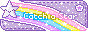
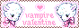
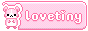
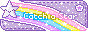
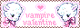
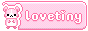

Gifs on this page have been paused by default! You can toggle them using the buttons below.
Fonts:
Body text - Hyperlegible - Braille Institute
Main header - Halcyon - Hvnter.net
Navigation and subtitles - Berrie - Hvnter.net
Sonic Adventure shrine:
Body text - Gill Sans
Navigation and subtitles - Nise Sega Sonic
Images:
Background image - Photo by Mathilde Normandeau, edited by me
Sonic Adventure shrine background image - Photo by Marissa Rodriguez, edited by me
Dolphin - Clip art, edited by me.
These are the various sites I have nabbed graphics from:


The Blinkie Hoard ✿
Chot @ Toyhouse
Adoptables:

   
  